BERKHAMSTED CASTLE, HP4 1HD
GETTING THERE
Postcode: HP4 1HD
Lat/Long: 51.7638N 0.5593W
Notes: Castle is in Berkhamsted in vicinity of the Railway Station. Sign posts point to castle. Car parking is available on Whitehill road directly outside castle or at railway station (pay and display).
WHAT IS THERE TO SEE?
A ruined, but nonetheless, impressive motte and bailey castle. Although not much remains of the structure on top of the motte, the summit can be accessed and gives good views of Berkhamsted.
Castle is managed by English Heritage.
ADDITIONAL NOTES
1. The castle had a lucky escape - Victorian railway designers sought to build the London to Birmingham Railway directly through the site of Berkhamsted Castle (Berwick-upon-Tweed Castle met a similar fate) but was saved by local opposition. The Act of Parliament that authorised the construction of the railway also protected the castle making it the first such property to be protected by law.
2. When Cecily Neville died she described herself as mother to the late King Edward IV. She made no mention in her will of her other Royal son, Richard III. Perhaps an indication of estrangement between the two?
Situated near Watling Road and only fifteen miles from London, Berkhamsted Castle was a popular home for the medieval aristocracy. Thomas à Becket, Richard Earl of Cornwall and Edward Black Prince of Wales all lived here and King John II of France, after his catastrophic defeat at Poiters, was held prisoner in the castle.
HISTORY OF BERKHAMSTED CASTLE
Berkhamsted Castle was built in the very early days of the Norman Conquest; William I, having landed near Pevensey and defeating Harold at the Battle of Hastings, proceeded north towards Hertfordshire before entering London. Given the strategic location, situated near Watling Road, William built an earth and timber motte-and-bailey at Berkhamsted to control the area. Concurrently it was here that he met Ealdred, Archbishop of York and other key Anglo-Saxon aristocrats who swore fealty to him and offered him the Crown. William was crowned in London on Christmas Day 1066.
By 1086 the castle was in the hands of Robert of Mortain, half-brother to William but was seemingly destroyed when his son rebelled against Henry I. With the lands confiscated it was then granted to Randulph, Lord Chancellor who constructed a new castle albeit another timber framed building. In 1155 Thomas à Becket, then Lord Chancellor, was granted the honour of Berkhamsted by King Henry II and spent significant sums rebuilding much of the castle in stone. After being promoted to Archbishop of Canterbury, Thomas famously fell from favour and Berkhamsted was confiscated in 1164. Henry II retained the castle in Royal ownership and recognised the associated settlement as a town.
During the reign of King John (1199 to 1216) tensions between the monarchy and his Barons erupted into the First Barons War. Berkhamsted was caught up in the fight with John ordering the defences to be significantly upgraded in 1215. This proved timely as, to aid their cause, the Barons had invited Prince Louis of France to invade England and seize the throne. Although John died in October 1216 (at Newark Castle), the war raged on and Berkhamsted was besieged in December 1216. After a siege of twenty days, including extensive bombardment, the castle was surrendered. Louis' campaign however came to nothing; defeated just five months later at the Battle of Lincoln (1217) coupled with the accession of young King Henry III, hostilities between the Crown and the Barons came to an end. The castle was returned to Royal ownership the same year.
John had passed Berkhamsted Castle to his wife and through her it passed to Richard, Earl of Cornwall. He used it as his primary residence ultimately dying there in 1272. The castle then passed with the Earl of Cornwall title to Piers Gaveston, unpopular favourite of Edward II, before ending up with Edward, Prince of Wales (the Black Prince). He spent much time in the castle, including his honeymoon, and after his great victory at the Battle of Poitiers (1356) he held his prisoner, King John II of France, here. Edward died at Berkhamsted in 1376.
The castle played no active part in the Wars of the Roses but did act as a home to Cecily Neville, mother of Edward IV, during both her son's reign. She died in 1495 and the castle was thereafter neglected. Quarried for stone throughout the Elizabethan period it was indefensible by the Civil War and played no part in the action.
Recovered original photographs
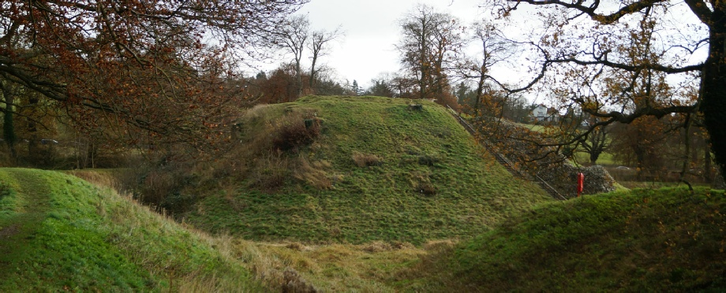
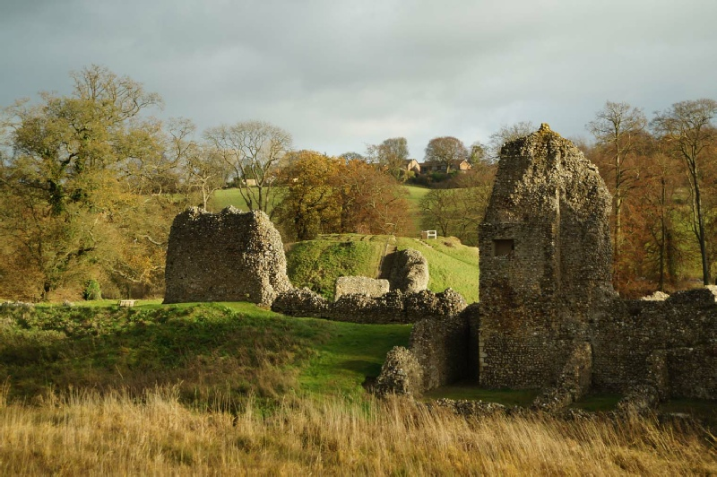
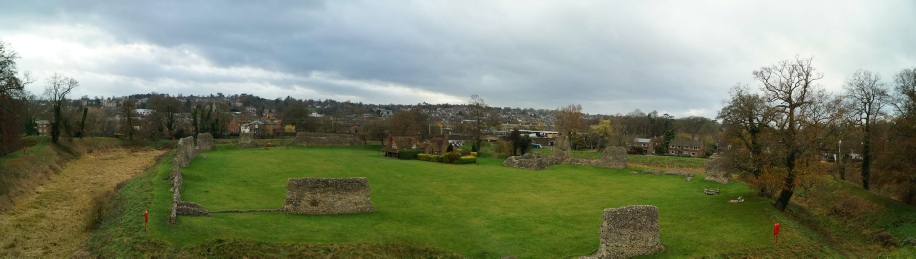
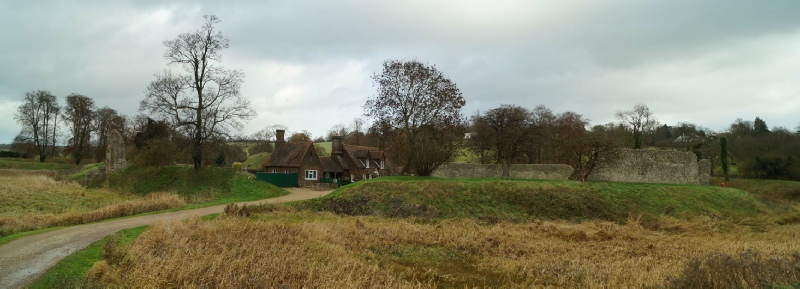
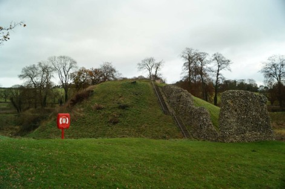
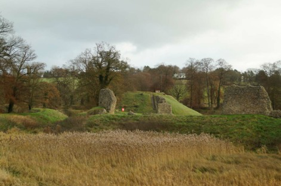
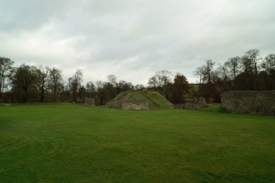
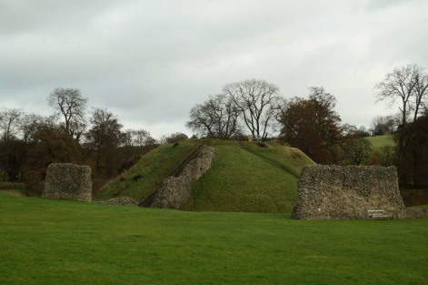
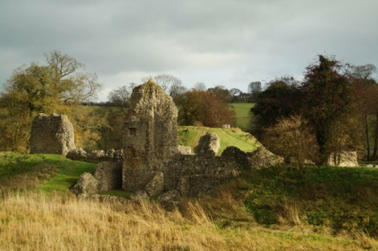
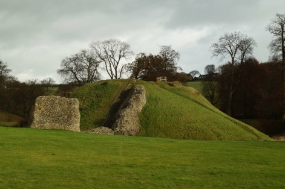
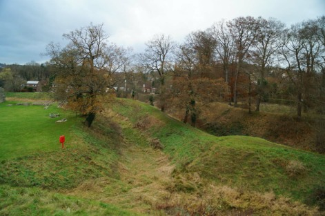